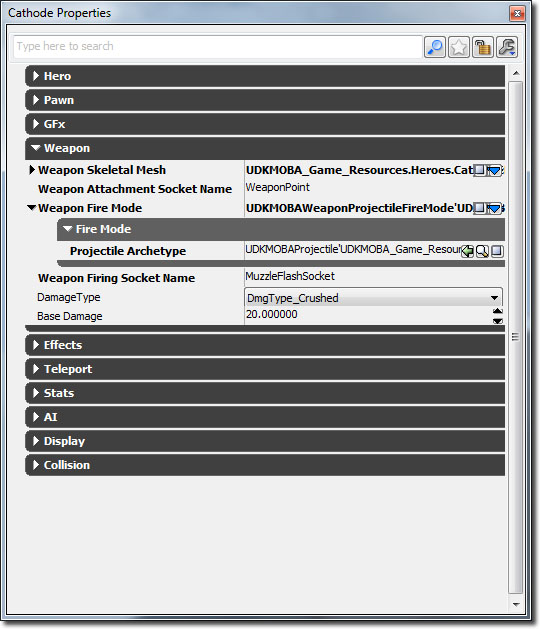

UDN
Search public documentation:
MOBAKitWeaponsKR
English Translation
日本語訳
中国翻译
Interested in the Unreal Engine?
Visit the Unreal Technology site.
Looking for jobs and company info?
Check out the Epic games site.
Questions about support via UDN?
Contact the UDN Staff
日本語訳
中国翻译
Interested in the Unreal Engine?
Visit the Unreal Technology site.
Looking for jobs and company info?
Check out the Epic games site.
Questions about support via UDN?
Contact the UDN Staff
MOBA 스타터 키트 - 웨폰 시스템
문서 변경내역: James Tan 작성. 홍성진 번역. UDK 2012년 5월 버전으로 최종 테스팅.
개요
스타터 키트의 웨폰 시스템은 UDK 표준 웨폰 시스템과 다릅니다. 그 이유는 무기의 복잡도가 무기 자체에 따라 달라지기 보다는 크립, 영웅, 타워의 스탯에 따라 크게 달라지기 때문입니다. 그래서 대부분의 데이터를 웨폰 코드 안에 두기 보다, 웨폰은 스탯 시스템에서 데이터를 수집한 다음 그 데이터를 적 크립, 영웅, 타워에 빼기식으로 적용하는 노티피케이션 시스템처럼 작동합니다.
UDKMOBAWeaponFireMode
Weapon Fire Mode 기본 추상 클래스입니다. 여기서는 자손 클래스에서 사용하는 기본 함수와 변수 대부분을 구성, Weapon 과 상호작용을 해야 하는 다른 모든 클래스의 공통 인터페이스 역할을 합니다.
함수
- SetOwner() - Fire Mode 의 오너를 설정합니다. Fire Owner 는 오브젝트로서 위치나 방향 등에 대한 정보를 저장하지 않기 때문에 필수입니다. 그러므로 월드와 상호작용해야 하는 Weapon 의 경우, Actor 인 (보다 그럴싸하게는 Pawn 인) 오너를 알 필요가 있습니다.
- GetAttackingAngle() - Weapon 의 공격 각도를 반환합니다. 다른 Pawn 을 정확히 조준하지 않아도 되는 Pawn 이 무기를 발사할 수 있도록 "대충의" 조준을 가능하도록 합니다.
- Destroy() - 가비지 콜렉터에 제거될 수 있도록 Fire Mode 오브젝트를 비웁니다. 오브젝트를 비우고 Actor 나 Object 로의 레퍼런스를 null 시켜주는 것이 중요합니다.
- StartFire() - 무기 발사를 시작합니다. 오너 안에 (SetOwner() 로 설정되는) 타이머를 구성해 두면, 타이머는 AttackSpeed 스탯에 영향받는 발사 속도에 맞춰 무기를 발사합니다.
- StopFire() - 무기가 현재 발사중이라면 타이머를 치워 발사를 중지합니다.
- IsFiring() - StartFire() 에 구성된 타이머가 현재 활성 상태이면, 즉 무기가 발사중이면 참을 반환합니다.
- Fire() - 실제 무기 발사를 수행하는 함수입니다. StartFire() 에 구성된 타이머에 의해 호출됩니다.
- BeginFire() - 서브 클래스에서 자체 무기 발사 메서드를 구현해야 하는 protected 함수입니다.
변수
- WeaponOwner - UDKMOBAAttackInterface 를 구현하는 Actor 로의 레퍼런스로, 이 웨폰에 대한 소유주입니다.
UDKMOBAWeaponConeFireMode
함수
- BeginFire() - UDKMOBAWeaponFireMode::BeginFire() 에 선언된 BeginFire() 함수를 덮어쓰는 함수입니다. 이 함수 작동방식은 먼저 '원뿔' 감지 범위 안에 있는 액터를 전부 그러모읍니다. 이 원뿔은 우선 VisibleCollidingActors() 반복처리기(iterator)를 사용하여 범위 내 모든 Actor 를 구하는 식으로 정의됩니다. 이 원 안의 모든 Actor 를 대상으로 도트(dot) 각도 안에 있는지 검사합니다. 이 검사를 통해 '원뿔'의 변(edge)을 만듭니다. 최대 히트 카운트가 지정되지 않았으면 검출된 모든 액터에 피해를 입힙니다. 지정되어 있으면, 검출된 액터에 등급을 매겨 정렬한 다음 높은 순위의 Actor 에 피해를 입힙니다.
- CompareHitActors() - 동적 배열에서 정렬 처리에 사용되는 함수입니다.
변수
- Range - 웨폰 최대 범위입니다.
- Extent - VisibleCollidingActors() 반복처리기에 사용되는 웨폰 추적(trace) 규모입니다.
- DotAngle - 이 각도 안에 있는 액터는 맞은 것으로 칩니다. 이 값이 1.f 에 가까울 수록 무기는 더욱 정확해 집니다.
- HitCount - 액터 최대 적중 횟수입니다.
- MomentumTransfer - 맞은 모든 액터에 전달할 동력입니다.
UDKMOBAWeaponProjectileFireMode
함수
- BeginFire() - UDKMOBAWeaponFireMode::BeginFire() 에 선언된 BeginFire() 함수를 덮어쓰는 함수입니다. 이 함수는 ProjectileArchetype 값에 따라 프로젝타일을 스폰할 뿐입니다. 프로젝타일 구성 이후 초기화(initialize)되어 적을 향해 날아갑니다.
변수
- ProjectileArchetype - 이 무기 발사시 사용할 프로젝타일의 아키타입 입니다.
UDKMOBAProjectile
UDKMOBAWeaponProjectileFireMode 에 사용되는 특수 프로젝타일 클래스입니다.
함수
- PostBeginPlay() - Unrealscript 에서 프로젝타일이 인스턴싱되어 초기화될 때 호출되는 이벤트입니다.
- ReplicatedEvent() - RepNotify 플랙이 붙은 변수가 클라이언트에 리플리케이트되었을 때 호출되는 이벤트입니다. 이 이벤트는 Enemy 변수가 리플리케이트되는 때를 잡아내다가, 클라이언트에 도달하면 클라이언트 측에서도 프로젝타일이 타겟에 유도될 수 있도록 호밍 타이머를 돌립니다.
- Init() - 프로젝타일의 속도를 설정하고 호밍 타이머도 돌립니다.
- HomingTimer() - Enemy 변수가 none 이거나 , 공격할 수 없는 상태인지 먼저 검사한 다음, 그렇다면 프로젝타일을 소멸시킵니다. 그 외의 경우에는 프로젝타일의 속도를 재조정하여 적을 찾아갈 수 있도록 합니다.
- Touch() - 프로젝타일이 적이 관련된 터치 이벤트에만 반응하도록 합니다.
- ProcessTouch() - 프로젝타일이 적에 닿았을 때만 피해를 입히고 폭발하도록 합니다.
- HitWall() - 프로젝타일이 적에 닿았을 때만 피해를 입히고 폭발하도록 합니다.
- DealEnemyDamage() - 적에게 피해를 입힙니다.
- Explode() - 프로젝타일이 폭발할 때를 처리합니다. 임팩트 사운드 재생, 파티클 이펙트 스폰, 데칼 인스턴스 생성 등입니다.
변수
- FlightParticleSystem - 프로젝타일이 공중으로 날아갈 때 인스턴싱할 파티클 시스템입니다. 종종 프로젝타일 자체를 나타내는 데 사용됩니다.
- ImpactTemplate - 프로젝타일이 타겟에 충돌할 때 인스턴싱할 파티클 시스템입니다.
- ImpactDecalMaterialInstanceTimeVarying - 임팩트 데칼에 사용할 머티리얼 인스턴스 시간가변 입니다. 서서히 사라지는 선형 스칼라 데이터가 구성되어 있다 가정합니다.
- ImpactDecalOpacityScalarParameterName - 임팩트 데칼의 불투명 스칼라 파라미터 이름입니다. 데칼 머티리얼에 이 파라미터 이름이 존재하지 않으면 아무 일도 벌어지지 않습니다.
- ImpactDecalLifeSpan - 임팩트 데칼의 초 단위 수명입니다.
- ImpactDecalMinSize - 임팩트 데칼의 최소 크기입니다.
- ImpactDecalMaxSize - 임팩트 데칼의 최대 크기입니다.
- AlwaysUniformlySized - 참이면 데칼의 크기는 항상 균등(정사각)입니다.
- Speed - 프로젝타일의 초기 속도를 정의합니다.
- MaxSpeed - 프로젝타일의 속력에 대한 제한입니다 (0 은 무제한).
- SpawnSound - 프로젝타일 스폰시 나는 소리입니다.
- ImpactSound - 프로젝타일이 무언가를 때릴 때 나는 소리입니다.
UDKMOBAWeaponTraceFireMode
함수
- BeginFire() - UDKMOBAWeaponFireMode::BeginFire() 에 선언된 BeginFire() 함수를 덮어쓰는 함수입니다. 이 함수는 때릴 액터를 찾는 데 Trace() 함수를 사용합니다.
변수
- TraceRange - 웨폰의 최대 거리입니다.
- TraceExtent - 추적에 사용할 박스 규모입니다.
- MomentumTransfer - 맞은 액터에 전해줄 동력입니다.
내 영웅/크립에 웨폰 추가 방법

이 단순화된 웨폰 시스템 때문에, Pawn 아키타입 안에 새로운 Weapon Fire Mode 오브젝트를 만들어 주기만 하면 됩니다. 예를 들어 새로운 UDKMOBAHeroPawn 아키타입을 만들 때, 프로퍼티 창을 사용하여 원하는 유형의 Weapon Fire Mode 새 인스턴스를 만든 다음 다양한 프로퍼티를 할당합니다.새로운 Fire Mode 생성 방법
새로운 Fiew Mode 를 생성하는 데는 새로운 UDKMOBAWeaponFireMode 서브 클래스가 필요합니다. 대부분의 경우 BeginFire() 함수의 서브 클래스를 만들어 자체 발사 로직을 넣으면 됩니다.
class YourNewFireMode extends UDKMOBAWeaponFireMode;
/**
* 무기를 발사합니다.
*
* @param FireLocation 무기를 발사할 월드상의 위치
* @param FireRotation 무기를 발사할 방향
* @param Enemy 발사 대상 적
* @network 서버
*/
protected function BeginFire(Vector FireLocation, Rotator FireRotation, Actor Enemy)
{
}
defaultproperties
{
}